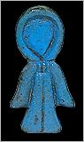

The arms and legs are wrapped separately. Between the layers of wrapping, the embalmers place amulets to protect the body in its journey through the underworld.

This is the 'Isis knot' amulet which will protect the body.
This is the 'Plummet' amulet which will keep the person balanced in the next life.